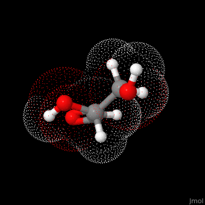

What are Carbohydrates?
Carbohydrates are organic compounds made up of carbon, hydrogen, and oxygen. They are the primary source of energy for most living organisms.
Types of Carbohydrates
- Monosaccharides: Simple sugars like glucose, fructose.
- Disaccharides: Formed by two monosaccharides (e.g., sucrose, lactose).
- Polysaccharides: Long chains like starch, glycogen, and cellulose.
Functions
- Provide energy for cellular functions.
- Store energy (e.g., glycogen in animals, starch in plants).
- Structural role (e.g., cellulose in plant cell walls).
Examples
- Bread
- Rice
- Pasta
- Fruits (glucose, fructose)